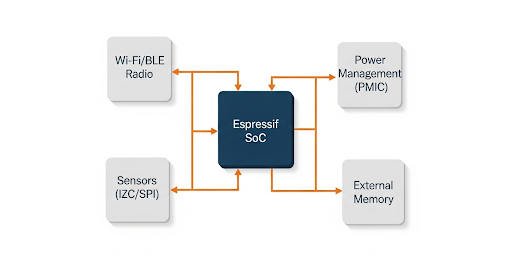

Smart Plug with Energy Monitoring Solution
Solution Overview
This solution provides a cost-effective and highly reliable design for a mass-market smart plug. Using the proven ESP8266EX for ultimate cost-effectiveness or the modern ESP32-C3 for enhanced features and security, it offers simple Wi-Fi control via a mobile app or cloud service. An optional energy monitoring feature can be added using a dedicated metering IC, providing users with valuable insight into their power consumption and enabling smart energy-saving automations.
Solution Block Diagram

Core Advantages
- Highly Cost-Effective: The design is optimized for a low BOM cost, making it suitable for high-volume consumer products.
- Flexible Core Options: Choose the ultra-low-cost ESP8266EX or the secure, feature-rich ESP32-C3 with BLE.
- Optional Energy Monitoring: Easily add value by integrating a metering IC to provide users with real-time power data (W, V, A).
- Compact and Safe: The design prioritizes a small form factor and includes considerations for electrical safety and compliance.
Recommended Bill of Materials (BOM)
| Part Number | Description | Role in Solution |
|---|---|---|
| ESP32-C3-MINI-1 | Modern RISC-V Wi-Fi & BLE Module | Recommended core for new designs, offering better security and BLE. |
| ESP8266EX (SoC) | Ultra Low-Cost Wi-Fi SoC | The most cost-effective option for simple Wi-Fi control. |
| (External IC) | Metering IC (e.g., BL0937) | Measures voltage, current, and power, communicating data via a UART interface. |
| (Component) | High-Power Relay (10A/16A) | Safely switches the high-voltage load on and off. |
Application Scenarios
- Consumer Smart Plugs
- Smart Power Strips
- In-wall Smart Outlets
- Appliance Control Modules